01 Take Action
Boot Camp Day 1: Take Action ▶ Watch Day 1 on YouTube
1. What does the instructor ask for in return for the free course?
D Your full effort: watch everything and do the homework.
02 Candlesticks
Boot Camp Day 2: Candlesticks ▶ Watch Day 2 on YouTube
1. A long upper wick with a weak close suggests what?
C Buyers couldn't hold the high: weakness.
Why: A long upper wick usually means price was rejected. A doji means indecision.
2. Why not trade a candle that hasn't closed?
A It can change completely before it ends.
Why: A green candle closes above its open; a red candle closes below it.
03 Discipline: Building the Base
Boot Camp Day 3: Discipline ▶ Watch Day 3 on YouTube
1. Why do the videos alternate trading and psychology?
B Mindset decides whether you can execute what you know.
04 Trends
Boot Camp Day 4: Trends ▶ Watch Day 4 on YouTube
2. Daily is bearish but the 15-minute made a higher high. Likely what?
C A pullback inside the bigger downtrend.
Why: Uptrend = higher highs and higher lows. Downtrend is the opposite.
05 Goal Setting
Boot Camp Day 5: Goal Setting ▶ Watch Day 5 on YouTube
1. How many steps does the exercise produce in total?
D 30: three goals with ten steps each.
06 Break of Structure
Boot Camp Day 6: Break of Structure ▶ Watch Day 6 on YouTube
1. A candle wicks below the last low but closes back above. Break of structure?
C No. Only a body close counts.
Why: To break structure UP, a candle must close above the most recent high.
07 Individuality
Boot Camp Day 7: Individuality ▶ Watch Day 7 on YouTube
1. What if a mentor's strategy never clicks?
B Learn from other sources and combine what you understand.
Why: If a mentor's way never clicks, learn from someone else.
08 Liquidity, Part 1: What and Why
Boot Camp Day 8: Liquidity Pt 1 ▶ Watch Day 8 on YouTube
1. What counts as liquidity?
A Resting orders such as stop-losses above a high.
Why: Liquidity means resting orders: stop-losses and pending entries.
2. Why do big players seek it?
C They need opposing orders to fill large positions.
Why: Large players need many opposing orders to fill big positions.
09 Check-In and Rest
Boot Camp Day 9: Check In ▶ Watch Day 9 on YouTube
1. Why is liquidity covered in three videos?
D It is the most important concept.
10 Liquidity, Part 2: Where It Sits
Boot Camp Day 10: Liquidity Pt. 2 ▶ Watch Day 10 on YouTube
1. Where do short sellers place stops?
C Just above a high.
Why: In an uptrend traders buy as price breaks a high, and shorts have stop-losses just above it.
11 How to Take a Loss
Boot Camp Day 11: How to take a Loss ▶ Watch Day 11 on YouTube
1. Healthiest reaction to a rule-following loss?
B Log it, study it, move on without changing size.
Why: Treat a loss as information: study what price did.
12 Liquidity, Part 3: Using It
Boot Camp Day 12: Liquidity Pt 3 ▶ Watch Day 12 on YouTube
1. After a high is swept, what do you wait for before shorting?
A A close below the most recent low (BOS).
Why: Mark only prominent highs and lows.
2. First target for a short?
C The previous prominent low.
Why: Target idea: the opposite prominent high or low.
13 Risk Management
Boot Camp Day 13: Risk Management ▶ Watch Day 13 on YouTube
1. Account $10,000, risk 1%. Max loss?
D $100.
Why: The guideline: risk about 1-3% of the account on a day.
2. Why is 1% so safe?
B It takes about 100 losses in a row to wipe out.
Why: At 1% it takes 100 straight losses to blow the account.
14 Fair Value Gaps, Part 1: What and Why
Boot Camp Day 14: Fair Value Gaps Pt. 1 ▶ Watch Day 14 on YouTube
1. What does an FVG represent?
C A range with little opposing order flow.
Why: A fast one-way move leaves little opposing order flow.
15 Identifying Your Problems
Boot Camp Day 15: Identifying problems ▶ Watch Day 15 on YouTube
1. Likelier real problem: 'can't spot order blocks' or 'too many trades'?
B Too many trades. Real problems are mostly behavioural.
16 Fair Value Gaps, Part 2: Spotting Them
Boot Camp Day 16: FVG Pt. 2 ▶ Watch Day 16 on YouTube
1. Bounds of a bullish FVG?
A High of candle 1 to low of candle 3.
Why: An FVG is a three-candle pattern.
2. Candle 1 high 105, candle 3 low 104. FVG?
C No. The wicks overlap.
Why: An FVG is a three-candle pattern.
17 Patience
Boot Camp Day 17: Patience ▶ Watch Day 17 on YouTube
1. Why do traders force entries?
D Entering feels exciting before the result is known.
Why: Placing a trade gives a dopamine hit before any result.
18 Fair Value Gaps, Part 3: Putting It Together
Boot Camp Day 18: FVG Pt. 3 ▶ Watch Day 18 on YouTube
1. Typical sequence of blocks?
C Bias, sweep + BOS, pullback into FVG, lower-timeframe BOS to enter.
Why: Sequence: bias, sweep, break of structure, retracement into an FVG, smaller-timeframe BOS.
▶ Look around 5:53 (estimate, scan 4:23 to 7:23)
2. Missed the first entry. What does the FVG give you?
A A second, patient entry.
Why: Use the FVG for a patient entry when the first BOS entry is too far.
▶ Look around 1:00 (estimate, scan 0:00 to 2:30)
19 How to Read News Data
Boot Camp Day 19: How to Read News Data ▶ Watch Day 19 on YouTube
1. Wait time after a high-impact release?
B About 15-30 minutes.
Why: After a red event wait about 15-30 minutes.
▶ Look around 6:37 (estimate, scan 5:07 to 8:07)
2. GBP/USD, GBP data better than forecast. Bias?
D Up.
▶ Look around 11:52 (estimate, scan 10:22 to 13:22)
20 Order Blocks, Part 1: What and Why
Boot Camp Day 20: Order Blocks ▶ Watch Day 20 on YouTube
1. Which leg is the OB for a bearish shift?
A The up-leg that swept the high before the break.
Why: Bearish shift: the up-leg; bullish shift: the down-leg.
▶ Look around 5:56 (estimate, scan 4:26 to 7:26)
2. Why does price return?
C Orders were filled there before; more can be filled.
Why: Orders were filled there, so more can be filled on a pullback.
▶ Look around 5:42 (estimate, scan 4:12 to 7:12)
21 How to Take a Win
Boot Camp Day 21: How to Take a Win & Life Lessons ▶ Watch Day 21 on YouTube
1. Why is taking a win badly dangerous?
D It breeds overconfidence and overtrading.
Why: After a win, taking another trade is overtrading.
▶ Look around 5:57 (estimate, scan 4:27 to 7:27)
22 Order Blocks, Part 2: Spotting Them
Boot Camp Day 22: Order Blocks pt.2 ▶ Watch Day 22 on YouTube
1. After a bullish BOS, which leg do you box?
C The down-leg before it.
Why: Bullish shift: box the down-leg before it; bearish: the up-leg.
▶ Look around 22:00 (estimate, scan 20:30 to 23:30)
2. Tiny stop inside a big block: safe?
A No. The stop must respect the bigger timeframe.
Why: A 4-hour block is big; a tiny stop inside it will get hit.
▶ Look around 9:52 (estimate, scan 8:22 to 11:22)
23 Check-In and Feedback
Boot Camp Day 23: Check In/ Be my boy ▶ Watch Day 23 on YouTube
24 Order Blocks, Part 3: Drawing and Using Them
Boot Camp Day 24: Order Blocks pt.3 ▶ Watch Day 24 on YouTube
1. Simple way to box an OB?
A Box the entire leg before the BOS.
▶ Look around 8:43 (estimate, scan 7:13 to 10:13)
2. Where does price react in the precise method?
C Around the start of the key candle's body.
Why: Tighter: from the wick to where the body starts on the key candle.
▶ Look around 10:37 (estimate, scan 9:07 to 12:07)
25 Overconfidence
Boot Camp Day 25: Over Confidence ▶ Watch Day 25 on YouTube
1. Why are later trades weaker?
D Volume fades; smaller moves and worse reward-to-risk.
▶ Look around 4:53 (estimate, scan 3:23 to 6:23)
26 Equilibrium: Premium and Discount
Boot Camp Day 26: Equilibrium ▶ Watch Day 26 on YouTube
2. Is 104 a premium or discount in that swing?
A Discount.
Why: Strongest pair: an FVG inside the discount or premium.
▶ Look around 6:28 (estimate, scan 4:58 to 7:58)
27 Fear and Doubt
Boot Camp Day 27: Fear ▶ Watch Day 27 on YouTube
1. Why should there be no fear on demo?
B It is fake money, so losses only teach you.
Why: On a demo account there is nothing to fear, so use it to build confidence.
▶ Look around 3:13 (estimate, scan 1:43 to 4:43)
28 Equilibrium, Part 2: On the Chart
Boot Camp Day 28: Equilibrium pt.2 ▶ Watch Day 28 on YouTube
1. What three levels do you need on the box?
A 0, 0.5 and 1.
▶ Look around 4:14 (estimate, scan 2:44 to 5:44)
2. In a downtrend, where do sellers look?
C In the premium, above the 50% line.
▶ Look around 1:28 (estimate, scan 0:00 to 2:58)
29 Your Trading Plan
Boot Camp Day 29: Trading Plan ▶ Watch Day 29 on YouTube
1. Why decide risk before the day starts?
D So a loss never surprises or tilts you.
Why: Start with risk management: decide your risk for the day before you trade.
▶ Look around 3:06 (estimate, scan 1:36 to 4:36)
30 Execution: The Pieces Together
Boot Camp Day 30: Execution ▶ Watch Day 30 on YouTube
1. What does a break of structure add after a liquidity sweep?
C Confirmation that orders were filled.
Why: An order block is where orders were filled. An FVG is a range with no opposing orders.
▶ Look around 6:06 (estimate, scan 4:36 to 7:36)
2. Which entry stacks the most confluence?
A Sweep + BOS + FVG or OB + price in discount/premium.
Why: Ultimate confluence: sweep + BOS + FVG or OB, plus price in the discount (or premium for sells).
▶ Look around 5:18 (estimate, scan 3:48 to 6:48)
31 Hard Work
Boot Camp Day 31: Hard Work ▶ Watch Day 31 on YouTube
1. What does the instructor say follows minimum effort?
B Minimum results.
Why: Minimum effort gets minimum results.
▶ Look around 1:00 (estimate, scan 0:00 to 2:30)
32 Execution, Part 2: Sweep + BOS
Boot Camp Day 32: Execution pt.2 ▶ Watch Day 32 on YouTube
1. Which of the first two entries has the lowest confluence?
A Sweep + BOS with no extra block.
Why: Homework: find 10 sweep + BOS examples and 10 sweep + BOS + order block examples, and see what price did next.
▶ Look around 19:21 (estimate, scan 17:51 to 20:51)
2. What does the order block add to the entry?
C A better, more exact entry price.
Why: Homework: find 10 sweep + BOS examples and 10 sweep + BOS + order block examples, and see what price did next.
▶ Look around 11:07 (estimate, scan 9:37 to 12:37)
33 Execution, Part 3: FVG + Equilibrium
Boot Camp Day 33: Execution pt.3 ▶ Watch Day 33 on YouTube
1. What if you miss the order block entry?
D A fair value gap can give a second entry.
Why: If the order block is missed, the FVG can still give a second entry.
▶ Look around 19:14 (estimate, scan 17:44 to 20:44)
2. How do you confirm an entry in a gap?
B A break of structure on a lower timeframe.
Why: Scale down to a lower timeframe and wait for a break of structure there as confirmation.
▶ Look around 6:51 (estimate, scan 5:21 to 8:21)
34 Daily Bias, Part 1
Boot Camp Day 34: Daily Bias ▶ Watch Day 34 on YouTube
1. Where do you start when finding the daily bias?
C The weekly timeframe, then work down.
Why: Start top-down: weekly trend, then daily, then 4-hour, then hourly.
▶ Look around 3:35 (estimate, scan 2:05 to 5:05)
2. Daily is bearish but the 4-hour is bullish. What do you do?
A Be tentative: wait for bearish confirmation.
Why: The 4-hour should agree. If it doesn't, be careful and wait for confirmation.
▶ Look around 5:02 (estimate, scan 3:32 to 6:32)
35 Daily Bias, Part 2: Live Example
Boot Camp Day 35: Daily Bias pt. 2 ▶ Watch Day 35 on YouTube
1. Why trade the extension, not the retracement, in an uptrend?
B Extensions travel much farther.
Why: In an uptrend the extensions are bigger than the retracements, so look to catch the extension.
▶ Look around 3:16 (estimate, scan 1:46 to 4:46)
2. How do you get a sniper entry?
D Find a high-timeframe zone, then confirm with a BOS on 15 or 5 minute.
Why: Then scale down to 15-minute and 5-minute for a sweep and BOS to get the sniper entry.
▶ Look around 7:19 (estimate, scan 5:49 to 8:49)
36 Daily Bias, Part 3: Recap
Boot Camp Day 36: Daily Bias pt. 3 ▶ Watch Day 36 on YouTube
1. A daily BOS down in a weekly uptrend is most likely what?
A A weekly retrace.
Why: A daily BOS down inside a weekly uptrend is probably a weekly retrace.
▶ Look around 11:41 (estimate, scan 10:11 to 13:11)
2. What do you use to find where a retrace may stop?
C Retracement tools such as equilibrium.
Why: In a retrace, use retracement tools like equilibrium to see where price may draw to.
▶ Look around 1:28 (estimate, scan 0:00 to 2:58)
37 Taking Profits
Boot Camp Day 37: Taking Profits ▶ Watch Day 37 on YouTube
1. Where does the instructor place a first take profit?
D At the one-higher-timeframe draw on liquidity.
Why: The first TP is the one-higher-timeframe draw on liquidity.
▶ Look around 4:13 (estimate, scan 2:43 to 5:43)
2. How many take profits do you need?
B Whatever your plan says; he uses three or four.
Why: The instructor sets about three or four take profits, but you decide in your plan.
▶ Look around 4:00 (estimate, scan 2:30 to 5:30)
38 Stop Losses
Boot Camp Day 38: Stop Losses ▶ Watch Day 38 on YouTube
1. Where does the standard stop go on a short?
C Above the liquidity sweep.
▶ Look around 2:51 (estimate, scan 1:21 to 4:21)
2. Why add extra to the stop?
A To cover the spread so you aren't stopped by noise.
Why: A stopped trade can still have been a good call if price later moves your way: bias correct, stop too tight.
▶ Look around 1:56 (estimate, scan 0:26 to 3:26)
39 Calculating Lot Size
Boot Camp Day 39: Calculating Lot Size ▶ Watch Day 39 on YouTube
1. What three things go into a lot-size calculator?
B Account balance, risk percent, stop-loss distance.
Why: Three ways: a set lot size, a calculated lot size, or full port. Never do the last one.
▶ Look around 4:02 (estimate, scan 2:32 to 5:32)
2. Which risk level should beginners never use?
D The 'confident' double size.
Why: Normal risk is 1%. De-risk is half of it. 'Confident' (double) is not for beginners.
▶ Look around 14:43 (estimate, scan 13:13 to 16:13)
40 Help Me Help You
Boot Camp Day 40: Help me help you ▶ Watch Day 40 on YouTube
1. What kind of videos come next?
A Fixes for small, specific mistakes.
Why: Next videos will fix small mistakes: things you notice yourself repeating.
▶ Look around 5:06 (estimate, scan 3:36 to 6:36)
41 Learn From Your Losses
Boot Camp Day 41: Learn from Losses ▶ Watch Day 41 on YouTube
42 How to Backtest
Boot Camp Day 42: How to Backtest ▶ Watch Day 42 on YouTube
1. Why does the instructor avoid bar replay?
C It locks you to one timeframe and shows the whole higher candles.
Why: Bar replay locks you to one timeframe.
▶ Look around 1:49 (estimate, scan 0:19 to 3:19)
2. What does he do instead?
A Scroll back on a full chart and analyse top-down.
Why: The instructor prefers scrolling back on a full chart, picking a day and analysing top-down.
▶ Look around 1:08 (estimate, scan 0:00 to 2:38)
43 Weekly Analysis
Boot Camp Day 43: Weekly Analysis ▶ Watch Day 43 on YouTube
1. What do you check first when planning the week?
B The news calendar.
Why: Check the news calendar first and note any day to avoid.
▶ Look around 1:00 (estimate, scan 0:00 to 2:30)
2. What if price proves your bias wrong?
D Change your bias and adapt.
Why: If price proves you wrong, change your bias and adapt.
▶ Look around 9:22 (estimate, scan 7:52 to 10:52)
44 Try Not to Trade
Boot Camp Day 44: Try not to Trade ▶ Watch Day 44 on YouTube
1. What is the first test for taking a trade?
A It must be in line with your daily bias.
Why: First step: the setup must be in line with your daily bias.
▶ Look around 2:22 (estimate, scan 0:52 to 3:52)
2. Which market conditions should you avoid?
C Directionless chop with no clear bias.
▶ Look around 5:16 (estimate, scan 3:46 to 6:46)
45 Stop Over-Complicating
Boot Camp Day 45: Over Complicating ▶ Watch Day 45 on YouTube
1. What is usually missing for a struggling beginner?
D Market experience, not strategy.
▶ Look around 3:31 (estimate, scan 2:01 to 5:01)
46 Journaling Trades
Boot Camp Day 46: Journaling Trades ▶ Watch Day 46 on YouTube
1. Which sessions does he prefer to trade?
C New York or London, not Asian.
Why: He prefers New York or London over Asian, because that's where volume and volatility are.
▶ Look around 3:40 (estimate, scan 2:10 to 5:10)
2. How many pairs should a not-yet-profitable trader journal?
A One.
▶ Look around 1:57 (estimate, scan 0:27 to 3:27)
47 Back Testing a News Day (CPI)
Boot Camp Day 47: Back Testing CPI ▶ Watch Day 47 on YouTube
1. Why does he avoid trading CPI days?
B The news candle is usually most of the move; the rest is small.
Why: On CPI day the news candle is usually the majority of the move. After it, price barely moves.
▶ Look around 3:21 (estimate, scan 1:51 to 4:51)
2. A 15-minute BOS down while the hourly is in an uptrend is likely what?
D A retrace for the hourly.
Why: A 5-minute break of structure down was only a retrace inside the higher-timeframe uptrend.
▶ Look around 5:21 (estimate, scan 3:51 to 6:51)
49 Daily Bias, Back Testing and a Recap
Boot Camp Day 49: Daily Bias/Backtesting + $9k Loss SPX Trade Recap ▶ Watch Day 49 on YouTube
1. What kind of loss should you aim for?
D Losses from higher-timeframe reversals, not execution errors.
Why: Aim to lose trades to higher-timeframe reversals, not to execution errors.
▶ Look around 3:20 (estimate, scan 1:50 to 4:50)
2. Daily bearish, 4-hour and hourly bullish. What are the odds?
B Low. Skip it unless the 4-hour flips.
Why: Daily and 4-hour should agree. If the daily is bearish but the 4-hour and hourly are bullish, odds are low.
▶ Look around 4:15 (estimate, scan 2:45 to 5:45)
50 Weekly Analysis
Boot Camp Day 50: Weekly Analysis ▶ Watch Day 50 on YouTube
1. Which pairs does he avoid on CPI day?
C GBP/USD and GBP/JPY.
Why: Avoid GBP pairs on CPI day. Be selective on unemployment claims day.
▶ Look around 2:42 (estimate, scan 1:12 to 4:12)
2. What does he do when the monthly structure breaks up?
A Targets the next highs and trades with that bias.
Why: Monthly structure broke up, so the next draw is the highs above with no blocks in between.
▶ Look around 3:49 (estimate, scan 2:19 to 5:19)
51 Sunday Motivation
Boot Camp Day 51: Sunday Motivation ▶ Watch Day 51 on YouTube
1. How should you judge your results?
B Over a long period like a year, not a single day.
▶ Look around 1:00 (estimate, scan 0:00 to 2:30)
52 Daily Bias and a Break-Even Recap
Boot Camp Day 52: Daily Bias + Break Even Trading Recap ▶ Watch Day 52 on YouTube
1. Weekly up, daily up, 4-hour down, 1-hour down. What do you do?
A Wait. The timeframes disagree, so don't force a trade.
Why: S&P: weekly and daily bullish but 4-hour and hourly bearish: not a good day to trade it.
▶ Look around 1:24 (estimate, scan 0:00 to 2:54)
2. Which trend do you follow when weekly and daily disagree?
C The daily trend.
Why: Follow the daily trend. Trade a weekly retrace only if the daily agrees.
▶ Look around 2:33 (estimate, scan 1:03 to 4:03)
53 Daily Bias and a GBP/JPY Recap
Boot Camp Day 53: Daily Bias + $19k Profit GBPJPY Recap ▶ Watch Day 53 on YouTube
1. What does he do at take profit 1 in the recap?
D Closes half the position and moves the stop to break even.
Why: Recap: at take profit 1 he closed half the position and moved the stop to break even.
▶ Look around 9:41 (estimate, scan 8:11 to 11:11)
2. When will he flip his S&P bias?
B After a 15-minute high forms and price closes above it.
Why: Say in advance what would change your bias: a 15-minute high forming, then a close above it.
▶ Look around 1:00 (estimate, scan 0:00 to 2:30)
54 Daily Bias and No Trades Today
Boot Camp Day 54: Daily Bias + No Trades Today ▶ Watch Day 54 on YouTube
1. Why did he skip the small FVG play?
C He wanted a higher-timeframe building block.
Why: He wanted a trade to come from a higher-timeframe building block, not a small FVG.
▶ Look around 3:54 (estimate, scan 2:24 to 5:24)
2. Is a no-trade day a bad day?
A No. Following your plan beats a rule-breaking loss.
Why: No trade taken. He stuck to his plan and rules, and that is better than a rule-breaking loss.
▶ Look around 15:59 (estimate, scan 14:29 to 17:29)
55 The End
Boot Camp Day 55: THE END ▶ Watch Day 55 on YouTube
1. What replaces the Boot Camp series?
B Daily trade recaps and new, better-edited educational videos.
Why: The Boot Camp series ends here. The strategy is covered.
D1 Reading single candles
Chart drill, after episode 2
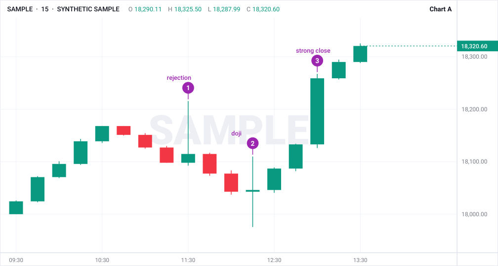
- 1 = a long-wick rejection; 2 = a doji (indecision); 3 = a strong close. ▶ Hear it at about 19:47
- The highs were rejected: buyers couldn't hold higher (weakness). ▶ Hear it at about 10:18
- Each candle is one clue; you need trend, structure and a plan. ▶ Hear it at about 11:48
D2 Name the trend
Chart drill, after episode 4
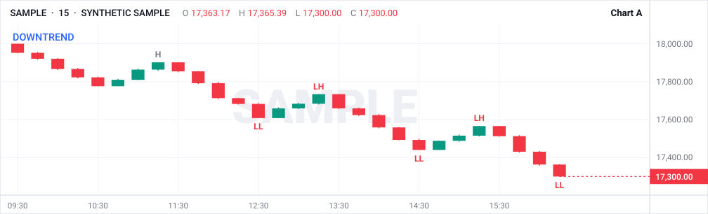
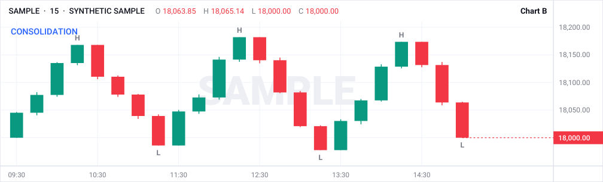
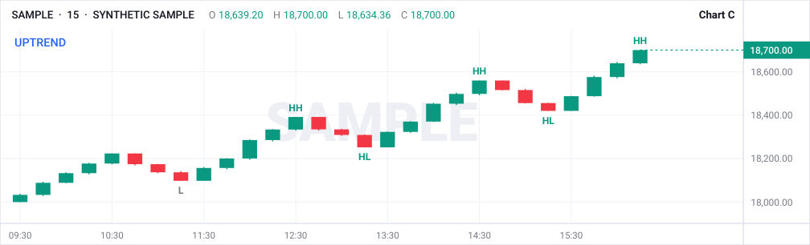
- A = downtrend; B = consolidation; C = uptrend. ▶ Hear it at about 20:50
- Uptrend: the latest higher low. Downtrend: the latest lower high. ▶ Hear it at about 20:50
- Buy pullbacks in the uptrend, sell rallies in the downtrend, wait in the range. ▶ Hear it at about 20:50
D3 Real break or fake-out?
Chart drill, after episode 6
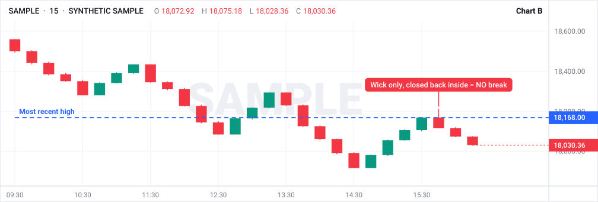
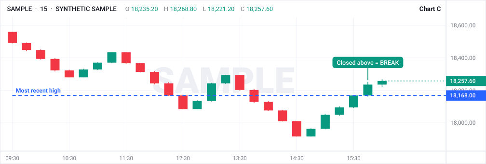
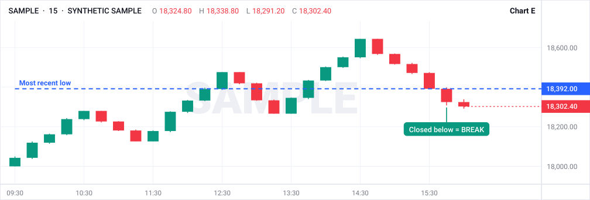
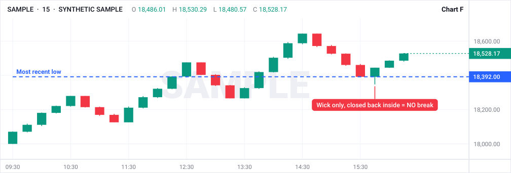
- A: YES, break to the downside: a body closed below the level. ▶ Hear it at about 16:35
- B: NO. Wick poked through, closed back inside: a sweep. ▶ Hear it at about 23:36
- C: YES, break to the upside: a body closed above the level. ▶ Hear it at about 7:51
- D: NO. Wick poked through, closed back inside: a sweep. ▶ Hear it at about 23:36
- E: YES, break to the downside: a body closed below the level. ▶ Hear it at about 16:35
- F: NO. Wick poked through, closed back inside: a sweep. ▶ Hear it at about 23:36
D4 Find the sweep
Chart drill, after episode 10
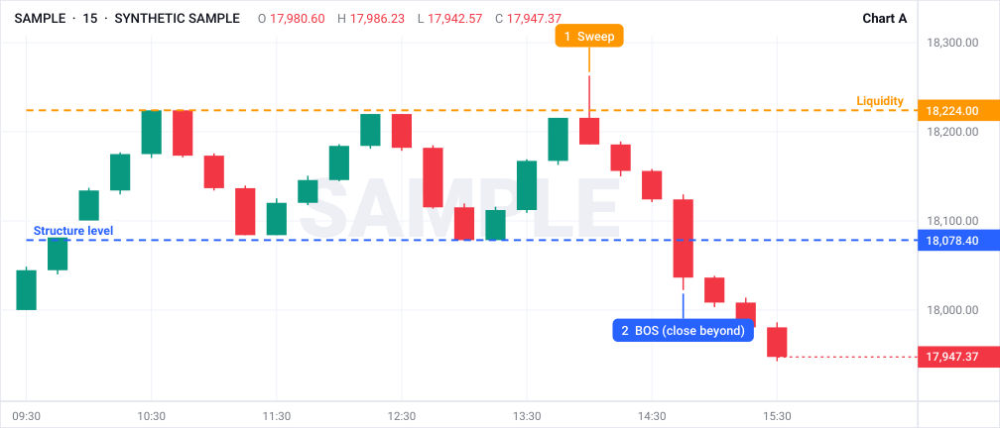
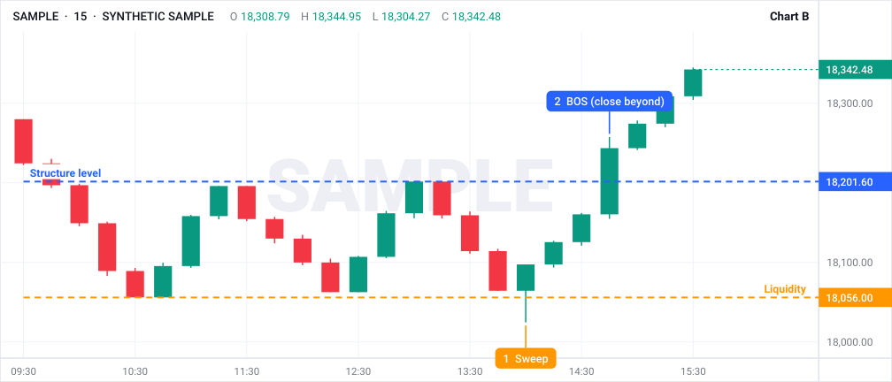
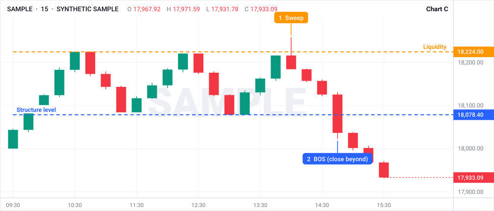
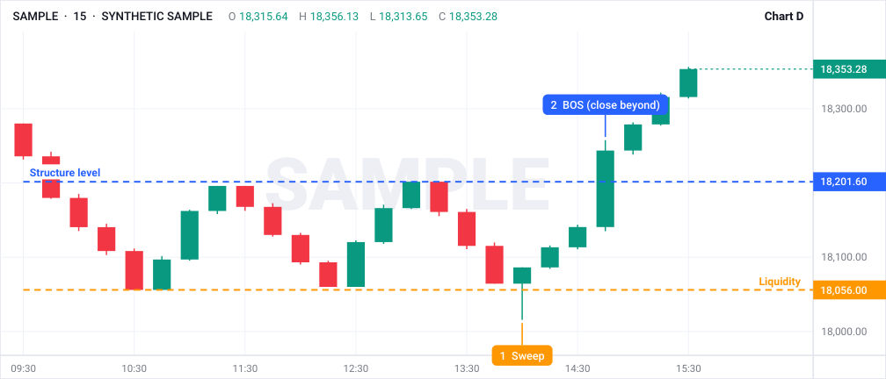
- A: equal highs swept; BOS closed below the level; expect price to go down toward the opposite low. ▶ Hear it at about 8:22
- B: equal lows swept; BOS closed above the level; expect price to go up toward the opposite high. ▶ Hear it at about 8:22
- C: equal highs swept; BOS closed below the level; expect price to go down toward the opposite low. ▶ Hear it at about 8:22
- D: equal lows swept; BOS closed above the level; expect price to go up toward the opposite high. ▶ Hear it at about 8:22
D5 Which gaps are real?
Chart drill, after episode 16
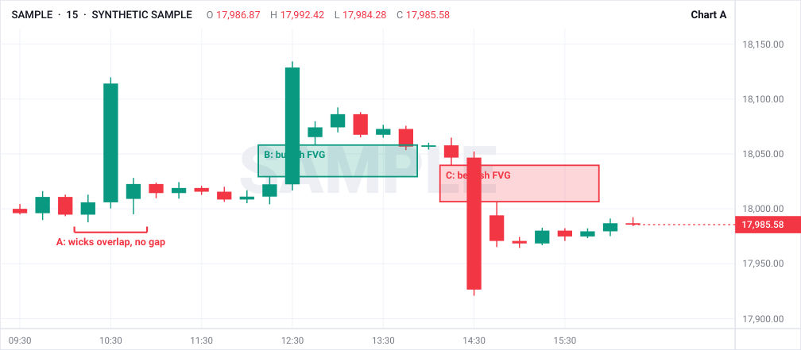
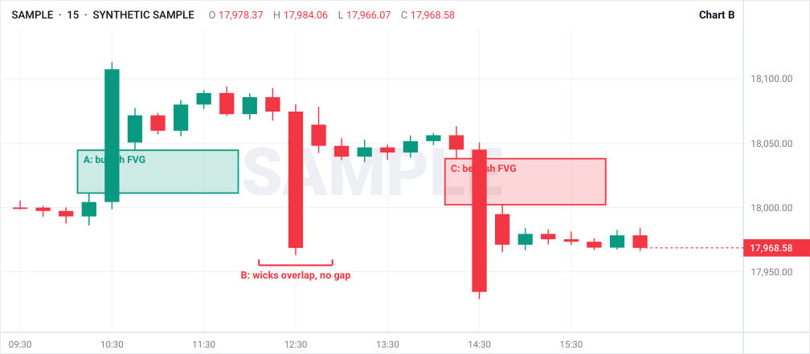
- 1A: NOT valid, the wicks of candles 1 and 3 overlap. ▶ Hear it at about 10:51
- 1B: valid bullish FVG (candle 1 high to candle 3 low). ▶ Hear it at about 10:51
- 1C: valid bearish FVG (candle 1 low to candle 3 high). ▶ Hear it at about 9:10
- 2A: valid bullish FVG (candle 1 high to candle 3 low). ▶ Hear it at about 10:51
- 2B: NOT valid, the wicks of candles 1 and 3 overlap. ▶ Hear it at about 10:51
- 2C: valid bearish FVG (candle 1 low to candle 3 high). ▶ Hear it at about 9:10
D6 Box the order block
Chart drill, after episode 22
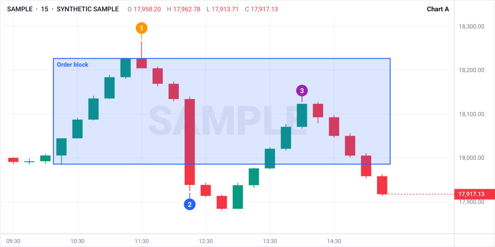
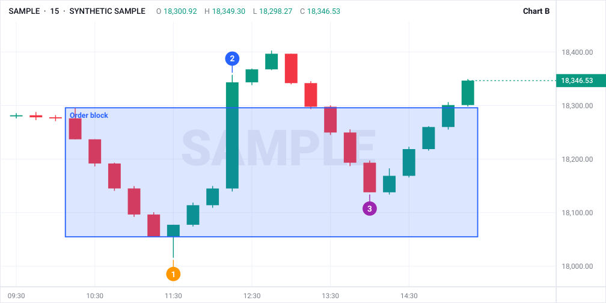
- A (bearish): the up-leg that swept the high before the break; wait for a pullback up into it, then a lower-timeframe BOS down. ▶ Look around 15:14 (estimate, scan 13:44 to 16:44)
- B (bullish): the down-leg that swept the low; wait for a pullback down into it, then a lower-timeframe BOS up. ▶ Look around 2:53 (estimate, scan 1:23 to 4:23)
- Stop beyond the sweep; target the previous liquidity. ▶ Look around 22:55 (estimate, scan 21:25 to 24:25)
D7 Premium or discount?
Chart drill, after episode 26
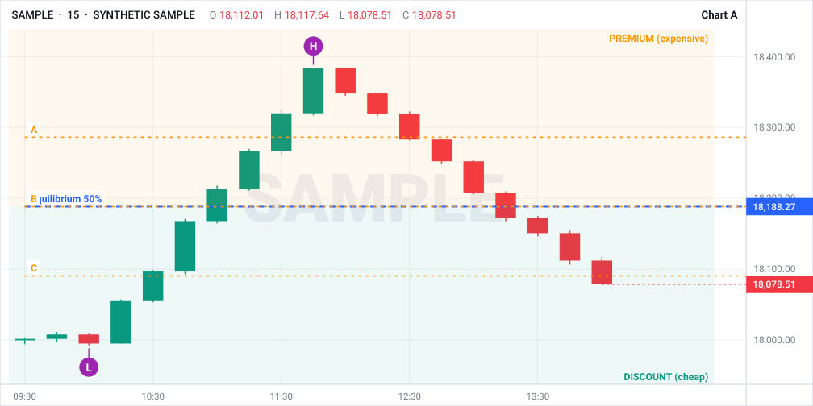
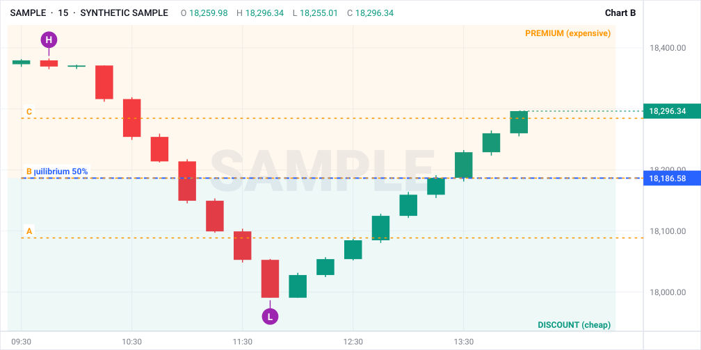
- A: low 99.7, high 113.7, equilibrium 106.7. Levels: A=110.2, B=106.7, C=103.2. Bullish swing: buy from the discount: C. ▶ Look around 6:28 (estimate, scan 4:58 to 7:58)
- B: low 99.7, high 113.7, equilibrium 106.7. Levels: A=103.2, B=106.7, C=110.2. Bearish swing: sell from the premium: C. ▶ Look around 6:28 (estimate, scan 4:58 to 7:58)
D8 Everything together
Chart drill, after episode 24
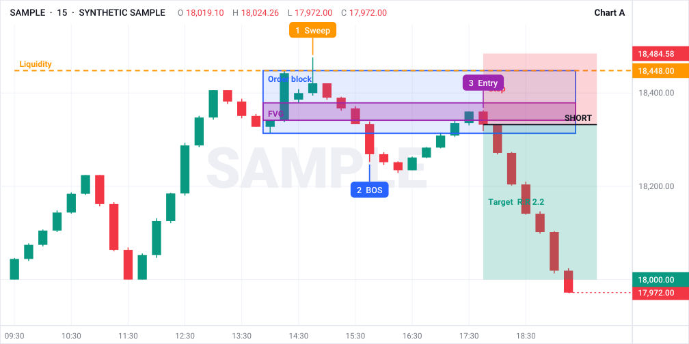
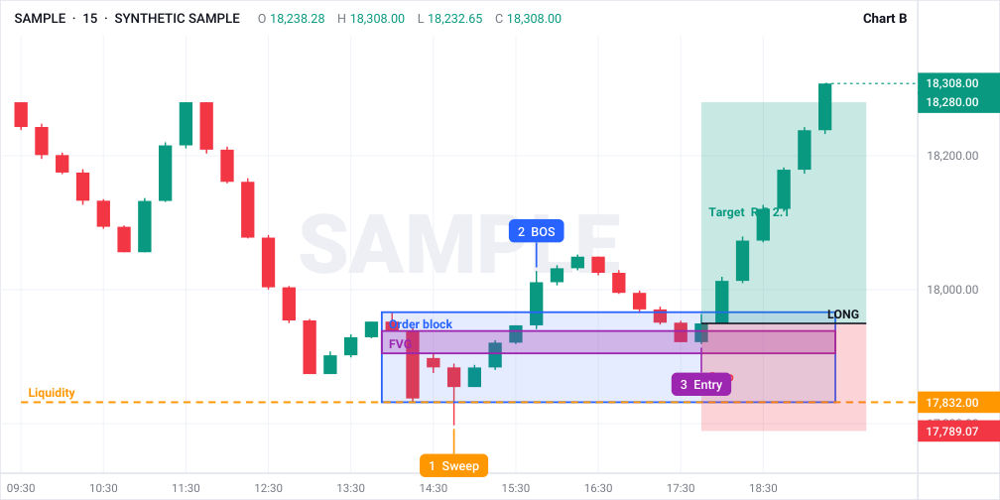
- A (sell): liquidity above the highs swept (1); a close below the level breaks structure (2); pullback into the FVG inside the block (3); stop above the sweep; target the previous low. ▶ Look around 18:38 (estimate, scan 17:08 to 20:08)
- B (buy): the mirror image. ▶ Look around 12:44 (estimate, scan 11:14 to 14:14)
- Plan: bias, sweep, BOS, pullback into OB/FVG, smaller-timeframe confirmation with defined stop and target. ▶ Look around 20:59 (estimate, scan 19:29 to 22:29)
$ Risk math
Extra practice (not from the videos). Contracts = risk $ ÷ (stop points × $ per point), rounded down.
- $100 risk, $40 per contract: 2 contracts
- $100 risk, $500 per contract: 0 contracts (too wide for this account)
- $250 risk, $150 per contract: 1 contract
- $500 risk, $750 per contract: 0 contracts (too wide for this account)
- $500 risk, $80 per contract: 6 contracts
- $50 risk, $100 per contract: 0 contracts (too wide for this account)
- $1,000 risk, $400 per contract: 2 contracts
- $300 risk, $60 per contract: 5 contracts
% News bias
Extra practice (not from the videos)
- UP. Good for the left (base) currency: pair rises.
- DOWN. Good for the right (quote) currency: pair falls.
- UP. USD is on the left: pair rises.
- DOWN. JPY is on the right: pair falls.
- DOWN. Bad for the base currency: pair falls.
- UP. Bad for the quote currency: pair rises.
- DOWN (bias). The instructor reads USD strength as bearish for both; price may disagree, so wait.
- SKIP. Sit out these four events entirely.